Az alábbi felhasználói dokumentáció egy útmutató a program beszerzéséhez, telepítéséhez, indításához és használatához.
A program ismertetése
A program egy szövegszerkesztő alkalmazás, ami megfelelő környezetet kínál dokumentumok, szövegek, jegyzetek gyors és kényelmes szerkesztéséhez. Bizonyos dokumentumok szerkesztése közben előfordul, hogy adott szavakra ugyanazt a formázási stílust szeretnénk alkalmazni a szó összes vagy szinte összes előfordulásakor. Ilyenkor sok ismételt műveletet jelent a szóra beállítani mindig újra és újra a formázásokat, ami jelentősen megnöveli a szövegírás idejét. Ez például egy egyetemi órai jegyzet készítése közben különösen rosszul tud jönni, mivel ilyenkor fontos, hogy minél gyorsabban írjuk a jegyzetünket, ne maradjunk le.
Erre a problémára kínál megoldást a jelen program. A dokumentum szerkesztése közben fel tudunk venni az úgynevezett szótárba készre formázott szavakat, és ezután egy elemző figyeli a amit begépelünk. Ha egyezést talál a szótár szavaival, akkor automatikusan alkalmazza rá a korábban beállított formázási stílust. Így a dokumentumunk jól formázott lesz, szinte gépelési sebességgel, csak a szerkesztés kezdetekor kell a szótárba felvennünk elemeket. Emellett az elemző az egyes elgépeléseinket is ki tudja szűrni, ekkor a szótárból ajánl fel csere lehetőségeket.
Rendszerkövetelmények
A program platformspecifikus, csak Windows operációs rendszeren futtatható. Az alkalmazás futtatásához optimális a Windows 7, vagy annál újabb operációs rendszer. A futtatható állomány x32 és x64-es architektúrájú rendszerekkel is használható.
Az alkalmazás hardware követelményeit a Visual Studio Diagnostic Tool segítségével állapítottam meg. Az alkalmazás alacsony erőforrásigényű, átlagos felszereltségű számítógépeken is jól működik.
Minimális hardware követelmények:
- 1024×768-as felbontású kijelző
- 200 MB szabad RAM
- 50 MB szabad háttértár
- Windows 7 x32 operációs rendszer
Ajánlott hardware követelmények
- 1024×768-as felbontású kijelző
- 8 GB RAM
- 200 MB szabad háttértár
- Legalább Windows 7 x64 operációs rendszer
Telepítés és indítás
A program futtatásához szükséges fájlokat egy zip tömörített archívumként lehet letölteni. A fájlok kicsomagolása után a DocEditor.exe állományt kell elindítani.
A szoftver futtatásához szükséges, hogy a számítógép rendelkezzen telepített .NET 5 keretrendszerrel. Ennek a telepítése a következő linkkel érhető el.
.NET 5 telepítéseAz alklamazás kezdőoldala
A program indítása után először a kezdőképernyőt látjuk magunk előtt. Ez az oldal új dokumentum létrehozására, betöltésére szolgál. A felület tartalmaz egy oldalsó menüt és egy listát, ami betölthető fájlokat tartalmaz.
A kezdőoldalról elérhető a felhasználói súgó is, ami rögtön segítséget nyújt az első lépésekben.
Az "Új üres" gombra kattintva létrehozunk egy új üres dokumentumot, szótár nélkül. Így "tiszta lappal" kezdhetünk neki a dokumentumunk szerkesztésének, és a hozzá tartozó szótárat is teljes mértékben személyre szabhatjuk.
Az megnyitás gombot választva betölthetünk egyet a korábban szerkesztett fájlok közül, ennek segítségével könnyen tudjuk folytatni a legutóbb félbehagyott munkánkat.
A mentés és mentés másként gombok az alkalmazás indításkor nem használhatók, ezek csak a főoldalról megnyitott kezdőoldalról elérhetők.
A kezdőoldalon levő listából egy korábban létrehozott szótárat választhatunk ki, amit egy új üres dokumentum mellé töltünk be.
A program kínál előre elkészített szótárakat is, amik adott témakörhöz hasznos formázott szavakkal vannak feltöltve. Ezekkel egy jó alappal tudjuk elkezdeni a dokumentumunknak a szerkesztését. Három betölthető szótár közül választhatunk, ezek általános jegyzetek készítéséhez, matematikai és informatikai jegyzetekhez alkalmazhatók.
Miután kiválasztunk a listából egy betöltendő fájlt, vagy a bal oldalon található menüsor segítségével új üres fájlt hozunk létre, vagy megnyitunk egy korábbi fájlt, a kezdőoldalról az alkalmazás főoldalára jutunk. A kezdőoldalt később is bármikor el tudjuk érni a főoldalról.
Az alkalmazás főoldala
A főoldalon bal oldalon az alkalmazás menüjét láthatjuk, a szerkesztéssel kapcsolatos funkciókat nyithatjuk meg a segítségével. A főoldalon található gombok, vezérlők többségben ikonok alapján tájékoztatják a felhasználót az adott gomb funkcióját illetően. A főoldalon található vezérlők használata egyértelmű és könnyen értelmezhető bárki számára, emellett a gombokról és funkciójukról a későbbiekben részletes leírást is találunk.
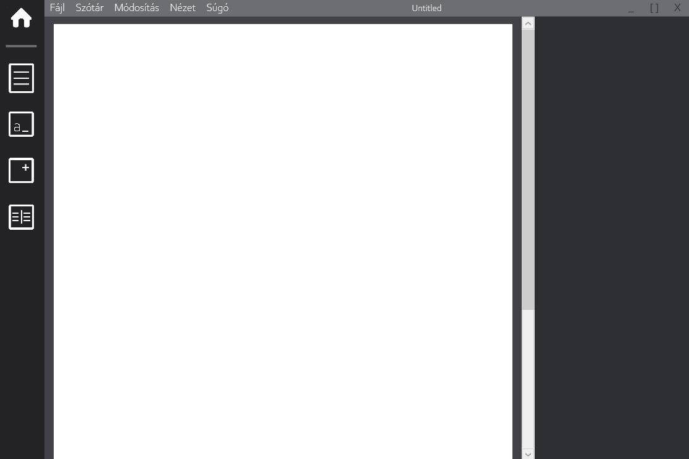A bal oldali menüben választhatjuk ki azt, hogy melyik szerkesztési menüpont nyíljon meg a jobb oldalon erre fenntartott területen. Ez a dokumentumszerkesztés menüje.
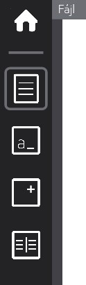A menüpontok között rájuk kattintva lehet navigálni. A felső menüpont kiválasztásával az oldalbeállítások nyílnak meg, a második menüpont a formázási lehetőségeket nyitja meg, a harmadik felel a képek beillesztéséhez tartozó felület megjelenítéséért, az utolsó pedig a szótárért. Egyszerre egy menüpont választható ki.
A felső házikót ábrázoló ikonra kattintással megnyithatjuk a kezdőoldalt. Ilyenkor csak a kezdőoldalon tudunk kattintani, azt bezárva visszajutunk a főoldalra, ami változatlan maradt a kezdőoldal megnyitása óta.
Az alkalmazás felső menüsorában találhatók az alkalmazáshoz tartozó általános műveletek, mint a mentés, betöltés, szöveg módosítása, súgók.
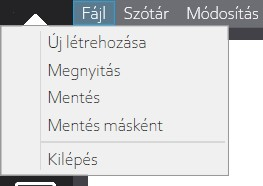A fájl menüpontban a fájlhoz tartozó felsorolt műveletek elvégzésére van lehetőségünk.
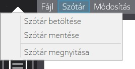Az éppen szerkesztett dokumentumhoz lehetőségünk van szótárat betölteni, vagy az aktuálisan használt szótárunkat elmenteni új fájlba. A szótár megnyitása menüpontra való kattintással a jobb oldalon nyílik meg a szótár szerkesztéséhez tartozó felület.
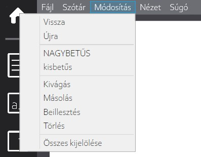A papíron található szöveg módosítására szolgál ez a menüpont. Kijelölhetjük az összes, a papíron található szöveget (ctrl+a), törölhetjük a kijelölt szövegrészt(delete), kivágás (ctrl+x), másolás (ctrl+c), beillesztés (ctrl+v) műveleteket végezhetünk el. Emellett a legutóbbi módosításainkat vissza is vonhatjuk (ctrl+z), a visszavont lépéseket újra alkalmazhatjuk(ctrl+y). Ezekre a műveletekre a zárójelekben megadott billentyűkombinációk is használhatók. Ezeken felül a kijelölt szöveget a megfelelő menüpontokra kattintva átállíthatjuk kis- és nagybetűsre is.
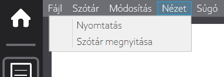A nyomtatás menüponttal megnyitjuk a nyomtatási beállításokat. Ennek a dialógusablaknak a segítségével van lehetőségünk a dokumentum elmentésére pdf fájlként. A szótár megnyitása menüpont a szótár kezelő felületét nyitja meg
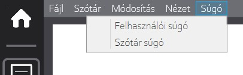
Az általános felhasználói segédletet és a szótár használatához tartozó segédletet is meg tudjuk nyitni a súgó menüpontból.
Az ablak jobb felső sarkában található három gombbal az alkalmazást letehetjük a tálcára ("_"), kinagyíthatjuk ("[ ]") és bezárhatjuk ("X"). Az ablaknak két mérete közül tudunk választani, és a méreteket kinagyítás gombbal tudjuk váltogatni. Nagyobb méretre váltáskor a jobb oldali felület nő meg, így a rajta található gombok és más elemek könnyebben használhatók, olvashatók lesznek azok számára is, akiknek nagyobb betűmérettel kell használniuk a számítógépet.
Oldalbeállítások menüpont
Az itt található szövegdobozok segítségével adhatjuk meg a dokumentumunkra alkalmazni kívánt margók értékeit. A szövegdobozban mindig az aktuálisan beállított érték szerepel. A beírt új értéket a mellette levő gombra kattintással tudjuk érvényesíteni. A gombok a következő sorrendben felelnek meg az oldalmargóknak: felső, alsó, bal, jobb.
Az ábra külön funkcióval nem rendelkezik, csak a margóbeállítás egyértelműsítésére szolgál.
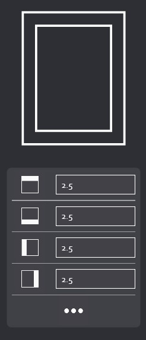A "..." gombra kattintva megnyitjuk a további oldalbeállítási lehetőségekhez tartozó párbeszédablakot.
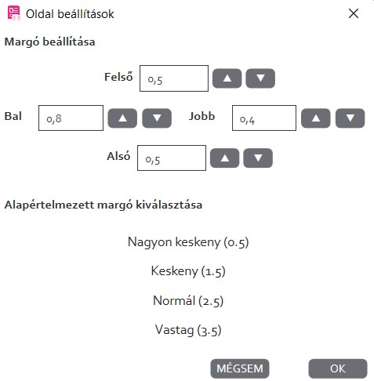Az alsó listából előre elkészített margók közül választhatunk. Amint rájuk kattintunk, a párbeszédablak bezáródik, és megtörténik a kiválasztott margó beállítása a dokumentumra.
A nyilakra kattintva növelhetjük vagy csökkenthetjük az adott margót 0.1-gyel. Az "OK" gombra kattintáskor az itt beállított értékek alkalmazódnak a dokumentumra, a párbeszédablak bezáródik. A mégsem gombra kattintva elvetjük a módosításokat, visszatérünk a dokumentumunkhoz.
Formázás menüpont
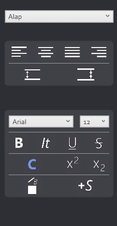A legtöbb funkcióval rendelkező menüpont a formázásához nyújt lehetőségeket.
A felső lenyíló listából egy elemet kiválasztva a kijelölésre alkalmazhatunk az ott szereplő stílusok közül.
Az alatta található gombokkal a bekezdések igazítását állíthatjuk be. Balra, középre, sorkizártra és jobbra tudjuk igazítani a kijelölt, vagy az aktuális bekezdésünket. Az ez alatt található gombokkal a sorközt tudjuk növelni és csökkenteni.
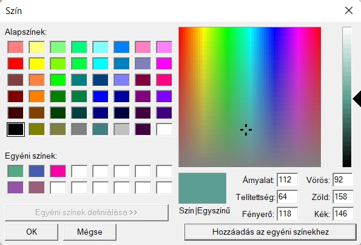A betűszín kiválasztásához egy párbeszédablak nyílik meg. Itt lehetőségünk van előre megadott színek közül választani, vagy saját színt keverni az erre kialakított felületen.
Emellett a kijelölt szöveget formázhatjuk még a felületen található gombok segítségével, felvehetünk új stílusokat is. Új stílus felvételekor a kijelölt szöveg legtöbb karakterére felvett formázási információkat mentjük el. Törölhetjük az alkalmazott formázásokat is, ilyenkor a dokumentumhoz tartozó alapvető betűszín, betűméret, betűtípusig csupaszítjuk le a kijelölt szövegrészt.
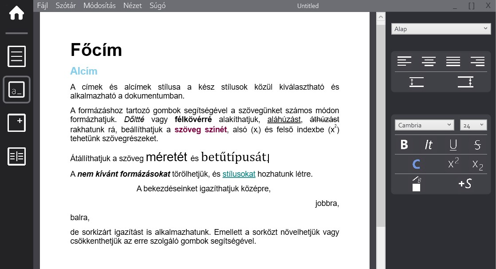Beszúrás menüpont

Lehetőségünk van képeket is beszúrni a dokumentumunkba. A kép ikonra való kattintással előjön egy ablak, ahol kiválaszthatjuk a beszúrni kívánt képet. Az elérési útvonala a mellette levő szövegdobozba kerül.
Az alsó két egymás melletti szövegdobozban a beszúrandó kép méreteit (szélesség, magasság) adhatjuk meg, ezt még a kép ikonra kattintás előtt be kell állítanunk. Ha nem adunk meg méretezést, akkor a kép alapértelmezett méretével kerül beszúrásra, egy sor hosszának megfelelő maximális mérettel.
Szótár menüpont
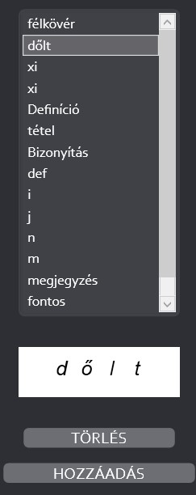 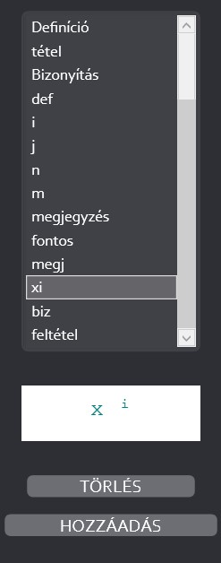A szótárhoz tartozó felületen a szótárba felvett szavak listája, azok előnézetének megjelenítő felülete és a szótár műveleteinek gombjai találhatók.
A listából amikor kiválasztunk egy elemet, akkor alatta megjelenik a szóra eltárolt formázás előnézete. Ilyenkor lehetőségünk van a törlés gombbal eltávolítani a kiválasztott elemet. Ilyenkor a törölt elem a háttérben tárolt szótárunkból is eltávolításra kerül.
Lehetőségünk van a szótárhoz új elemeket is hozzáadni. Ehhez ki kell jelölnünk pontosan egy szót a dokumentumban, majd a hozzáadás gombra kattintva elmentjük a szótárba a kijelölt szót, és a rá alkalmazott formázásokat karakterről karakterre.
Szótár
A korábban taglalt szótár funkciók mellett az automatikus formázás működéséről és tudnivalóiról is érdemes néhány szót ejteni.
A szöveg begépelése közben, szóköz lenyomása után az utoljára beírt szóra az elemző alkalmazza a leggyakrabban használt elmentett formázást, amennyiben talált a szótárban a vizsgált szóval megegyező elemet. Ilyenkor a szótárban az elem gyakorisága eggyel nő. Ez azért fontos, mert egy adott szóhoz több különböző formázási stílust is fel tudunk venni a szótárba, de valahonnan tudnunk kell azt is a szótár elemeihez, hogy melyiket milyen valószínűséggel szeretné a felhasználó alkalmazni.
"Erre gondolt?" funkció
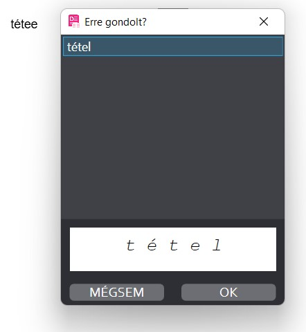Sok esetben hasznos lehet, és megkönnyítheti a begépelt hibák javítását az "Erre gondolt?" funkció. Minden begépelt, de a szótárban nem található szóra megvizsgálja, hogy található-e a szótárban hozzá nagyon hasonló elmentett szó. Ha igen, akkor az első maximum három lehetőséget felajánlja a nekünk, és választhatunk közülük egyet, vagy elutasíthatjuk az ajánlatot. Az ajánlat elutasításakor onnan folytathatjuk a dokumentum írását, ahol abbahagytuk. Ha kiválasztunk egy szót, akkor a szót, amit legutoljára begépeltünk, kijavítja a kiválasztott szóra, és a hozzá elmentett formázást is alkalmazza rá a program.
Szótár létrehozása
Amikor üres dokumentumot kezdünk szerkeszteni, a szótár menüpontra kattintáskor először egy felugró ablakkal találkozunk, ha nincsen betöltött szótárunk. Itt megadhatjuk a szótár nevét, és az "OK" gombra kattintással létrehozzuk a JSON fájlt, és betöltjük az üres szótárunkat, amennyiben helyes fájlnevet adtunk meg.
Szótár betöltése
A szótárt JSON fájlként tároljuk, így megfelelő tartalmú JSON fájlok betöltésére van lehetőségünk, amikor egy új szótárat szeretnénk betölteni az aktuális dokumentumunkhoz. A betöltés után az elemző az új szótárat fogja használni, az abban található formázásokat fogja automatikusan alkalmazni a begépelt szavakra.
Mentés, betöltés
A szerkesztett dokumentumunkat a program futása során bármikor el tudjuk menteni. A főoldal bezárása előtt az alkalmazás egy felugró ablakban jelzi, ha mentés nélkül szeretnénk kilépni. Ilyenkor lehetőségünk van visszalépni, és kilépés előtt elmenteni az éppen szerkesztett fájlt.
Az alkalmazás indításakor betölthetünk korábbi fájlokat, és folytathatjuk azoknak a szerkesztését. Ilyenkor a hozzá tartozó szótárat is betöltjük a dokumentummal együtt.
A mentés és a betöltés is külön dialógus ablak segítségével történik.
A dokumentum (.xaml) és a szótár (.json) külön, önmagukban is használható fájlokként vannak elmentve, ezekhez tartozik még egy összekötő fájl, aminek a kiterjesztése .doced. Betöltéskor ezt a fájlt kell megkeresni. Amennyiben mentés után nem lettek a fájlok másik mappákba mozgatva és/vagy átnevezve, úgy mindhárom fájl betöltését biztosítja az összekötő fájl.
Egyéb információk
A program magyar nyelvű verzióval készült el. A felhasználói segédlet és a szótár súgó is magyar nyelven érhető el.
Gombok jegyzéke
Mivel sok gomb csak ikonnal jelzi a felhasználó számára, hogy mi a funkciója, így sok esetben intuitív használatot követelnek meg. Ezt hivatott megkönnyíteni az alábbi táblázat, ahol a gombok ikonjai és a funkciói fel vannak tüntetve.
| Formázás menüpont | |
| Kép beillesztése menüpont | |
| Szótár menüpont | |
| Kezdőoldal megnyitásaa | |
| Felső margó beállítása | |
| Alsó margó beállítása | |
| Bal margó beállítása | |
| Jobb margó beállítása | |
| Kép beillesztése | |
| Balra zárt szövegigazítás beállítása | |
| Jobbra zárt szövegigazítás beállítása | |
| Középre zárt szövegigazítás beállítása | |
| Sorkizárt szövegigazítás beállítása | |
| 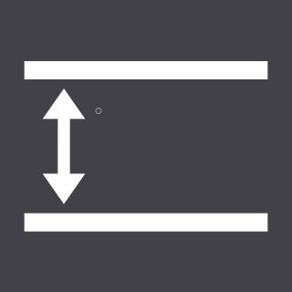 | Sorköz növelése |
| 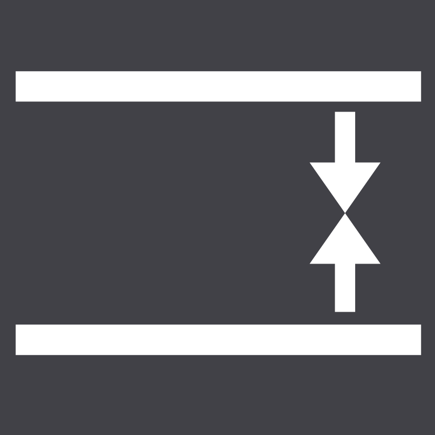 | Sorköz csökkentése |
| Félkövér formázás beállítása | |
| Dőlt formázás beállítása | |
| Szöveg aláhúzása | |
| Szöveg áthúzása | |
| Felső index beállítása | |
| Alsó index beállítása | |
| Szöveg színének beállítása | |
| Formázások törlése | |
| Új stílus felvétele |